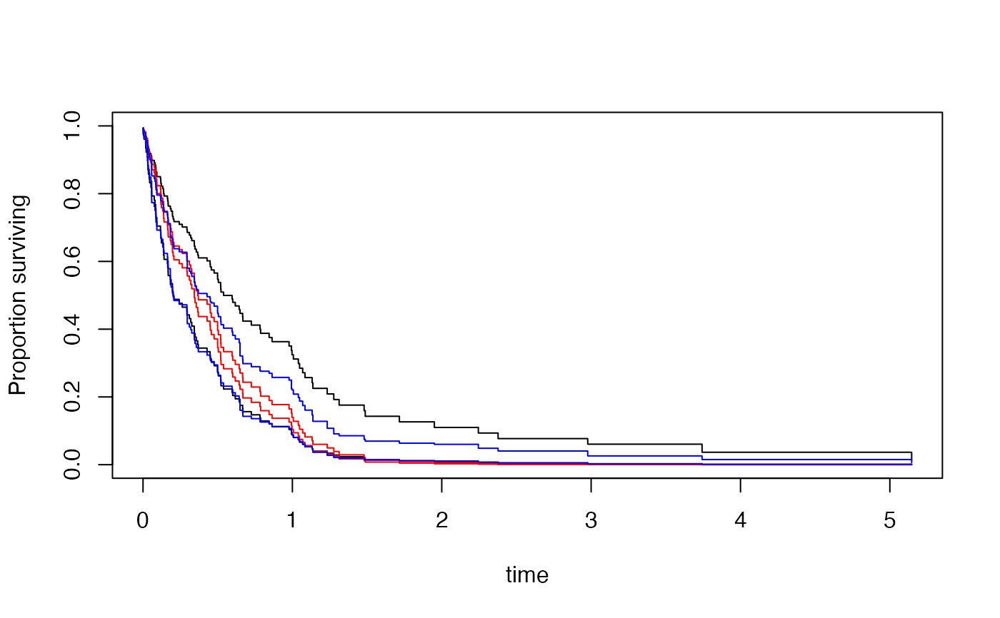
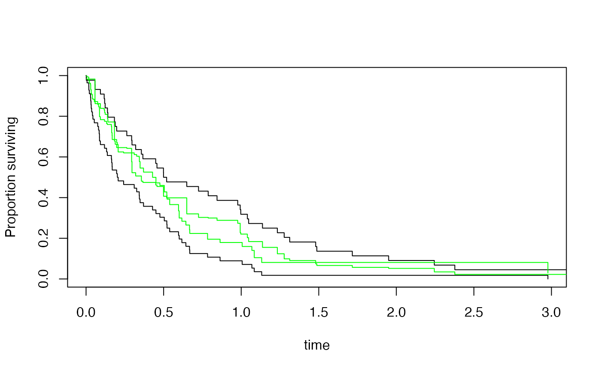

marginpred.RdReweights the design (using calibrate) so that the adjustment variables are uncorrelated
with the variables in the model, and then performs predictions by
calling predict. When the adjustment model is saturated this is
equivalent to direct standardization on the adjustment variables.
The svycoxph and svykmlist methods return survival curves.
marginpred(model, adjustfor, predictat, ...)
# S3 method for svycoxph
marginpred(model, adjustfor, predictat, se=FALSE, ...)
# S3 method for svykmlist
marginpred(model, adjustfor, predictat, se=FALSE, ...)
# S3 method for svyglm
marginpred(model, adjustfor, predictat, ...)A regression model object of a class that has a marginpred method
Model formula specifying adjustment variables, which must be in the design object of the model
A data frame giving values of the variables in model to
predict at
Estimate standard errors for the survival curve (uses a lot of memory if the sample size is large)
Extra arguments, passed to the predict method for model
## generate data with apparent group effect from confounding
set.seed(42)
df<-data.frame(x=rnorm(100))
df$time<-rexp(100)*exp(df$x-1)
df$status<-1
df$group<-(df$x+rnorm(100))>0
des<-svydesign(id=~1,data=df)
#> Warning: No weights or probabilities supplied, assuming equal probability
newdf<-data.frame(group=c(FALSE,TRUE), x=c(0,0))
## Cox model
m0<-svycoxph(Surv(time,status)~group,design=des)
m1<-svycoxph(Surv(time,status)~group+x,design=des)
## conditional predictions, unadjusted and adjusted
cpred0<-predict(m0, type="curve", newdata=newdf, se=TRUE)
cpred1<-predict(m1, type="curve", newdata=newdf, se=TRUE)
## adjusted marginal prediction
mpred<-marginpred(m0, adjustfor=~x, predictat=newdf, se=TRUE)
plot(cpred0)
lines(cpred1[[1]],col="red")
lines(cpred1[[2]],col="red")
lines(mpred[[1]],col="blue")
lines(mpred[[2]],col="blue")

## Kaplan--Meier
s2<-svykm(Surv(time,status>0)~group, design=des)
p2<-marginpred(s2, adjustfor=~x, predictat=newdf,se=TRUE)
plot(s2)
lines(p2[[1]],col="green")
lines(p2[[2]],col="green")

## logistic regression
logisticm <- svyglm(group~time, family=quasibinomial, design=des)
newdf$time<-c(0.1,0.8)
logisticpred <- marginpred(logisticm, adjustfor=~x, predictat=newdf)